Switching the Sky wireless router to WEP encryption - Windows Vista
By default the Sky wireless router is preconfigured with WPA-Personal encryption. If your computer is not compatible with WPA, but can support WEP encryption, follow the steps below to switch your Sky wireless router to WEP. (Please note you will need to be connected to the Sky wireless router through the yellow ethernet cable in order to access its wireless settings and change to WEP encryption.)
After you've switched your Sky wireless router to WEP, follow the steps to connect your PC wirelessly to the Sky wireless router.
Switching the Sky wireless router to WEP encryption
-
Open a web browser window (you can double-click on the 'S' icon on your desktop to do this). Enter 192.168.0.1 in the address bar and press Return.
-
In the log-in box, enter username: admin and password: sky
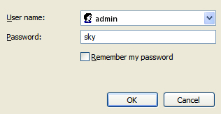 -
Click on the Setup tab in the menu at the top of the screen, then Wireless Settings.
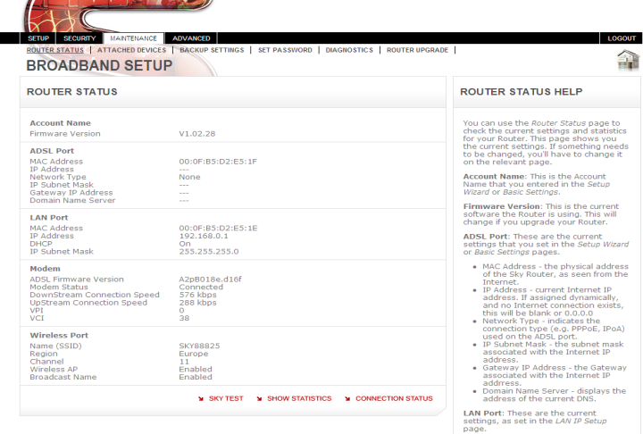 -
In the Security Options section, select the WEP (Wired Equivalent Privacy) option.
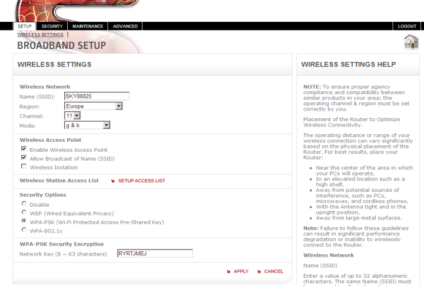 -
The screen will change to include the WEP specific options, as shown below.
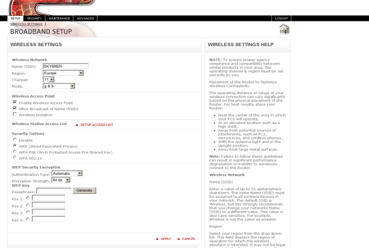 -
Authentication Type should be left at the Automatic setting.
-
In the Encryption Strength drop-down menu, select 128 bit instead of the current 64 bit option.
-
Enter some random characters into the Passphrase box. This will be used to generate four encryption keys that are used to encrypt the data across the wireless network.
-
Press Generate to create the keys.
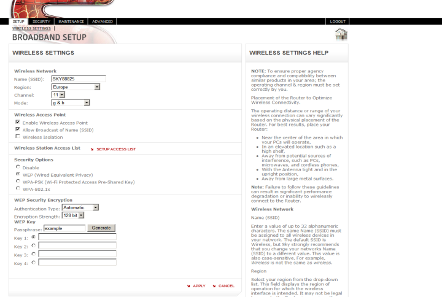 -
The keys are displayed in the four boxes. In the example shown, all four keys are identical.
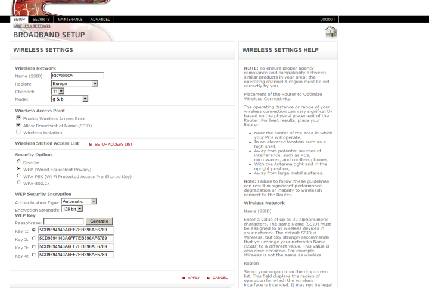 -
Copy and paste the full key (in this example, 5CD9894140A6FF7EB896AF6789) to a saved document on your computer, or write it down carefully. You will need it later when setting up your computer, or your computer's adapter, on the wireless network.
-
Click Apply. Your Sky wireless router has now been switched to WEP encryption.
Connecting your PC wirelessly to the Sky wireless router using WEP
-
From the Start menu, select Control Panel and then select the Network and Internet Connections option.
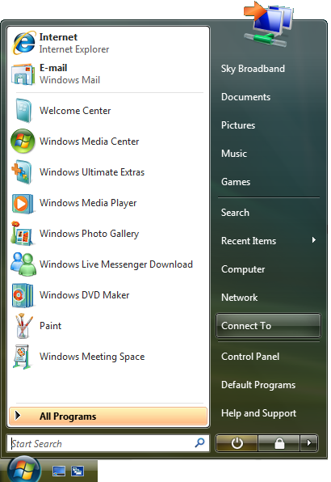 -
In the Network and Internet Connections window, select Network Connections.
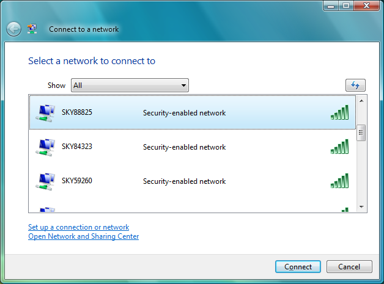 -
In the Network Connections window, if a Wireless Network Connection is listed, double-click this to open the Wireless Network Connection window.

-
The Sky wireless router wireless network should appear in the list of available networks. You can find the name of your wireless network on the bottom of the Sky wireless router, as well as on the Wireless Network Settings card included with your Sky wireless router and set-up guide. The name of your wireless network will be 'SKY' plus five numbers - for example: SKY12345.
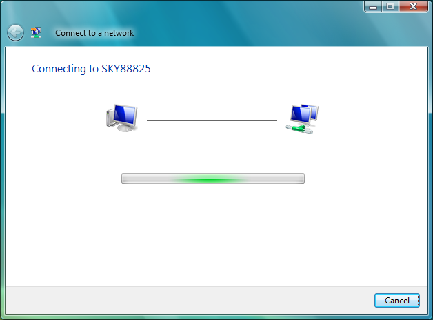 -
Double-click the name of your wireless router to connect.
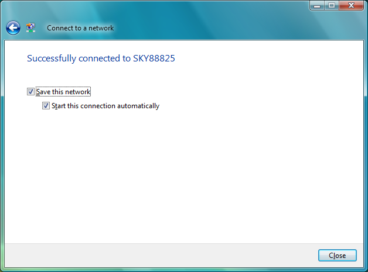 -
As the connection is now configured with WEP encryption, a window will appear asking for confirmation of the WEP or network key before the PC will be able to connect.
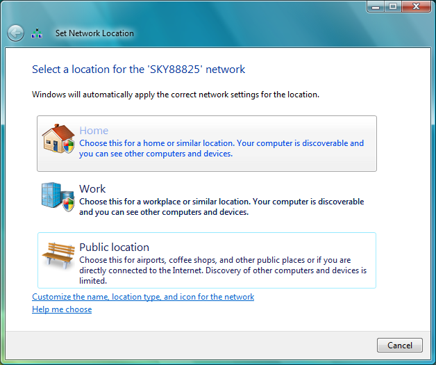 -
The WEP or network key is the key you created when switching the Sky wireless router to WEP (in this example, 5CD9894140A6FF7EB896AF6789). Enter this into the first box, and repeat in the second box to confirm it. Then click Connect.
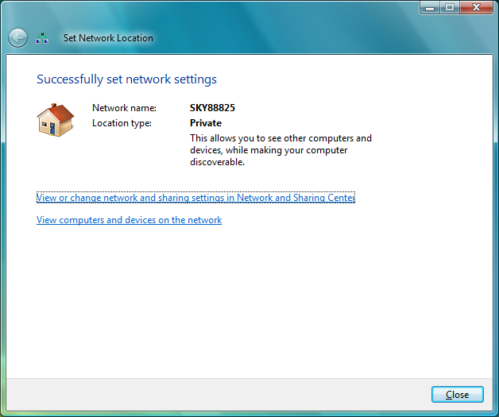 -
Your PC should now connect. The connection will show as 'Connected' in the Wireless Network Connection window.